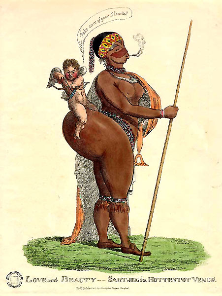

In his essay “On Seeing and Knowing”, Foucault defines the bodily space and our positioning of the body within the clinic through different modes of observation. Namely, Foucault juxtaposes two types of the patient’s perception of otherness (which he terms gazes): the observing gaze and the hearing gaze. The observing gaze is in a very submissive position, because it “refrains from intervening: it is silent and gestureless. Observation leaves things as they are…” (Foucault 123). This makes me think of how we act in the presence of doctors. Upon entering the doctor’s office, our beings descend into a state of hypnosis, and it is our eyes that become more active than any other part of our body. Our eyes inspect and analyze the clinical environment, the doctor and his/her movements, and the medical equipment. I cannot stop but wonder why our bodies become immovable, and why we are afraid of making a bodily movement we are not told to make. At this point, I have to agree with Socrates’ statement that humans are slaves of their own bodies, and that our bodies prevent us from thinking about anything else but our fears, loves, and desires (see Plato, Phaedo). The more we think we are in control of our bodies, the more we fear for them. Just like in the outside world, in a clinic, we observe things that could possibly harm or help our bodies; however, this perception seems to be more prominent in the presence of a doctor. In a clinic, our bodies become mute primarily because we come to the realization that we are not in control of them, but that they are being controlled by someone else, either a nurse or a doctor, and worst of all, by means of equipment. Human beings live with the belief that they are in possession of their own bodies, and as such, they try to alter, preserve, or save their bodies from possible disabilities that have been constructed by their own cultures or societies. Are we really in possession of our bodies, and can we really know our body and its functions based on what we eat or drink, its weight, and whether we run, walk, bike, or use a car? After entering the doctor’s office, do we really fear for our lives or do our fears come from the realization that our bodies and bodily functions may become considerably altered, in one way or another? By observing the clinical environment and its patients, our bodies see only a fixed image of disease, disorder, and complete lack of authority and power.
The second type of the patient’s perception, the hearing gaze, plays a very important role in the construction of the bodily condition. This is where the influence of language steps in: Do we see what we hear, or do we hear what we see? For example, if the patient is led into a Radiology department for a CT or an MRI, s/he will immediately presume that their body is in a grave condition. If their body is tested more than they expected, then their fears for the body’s well-being become deeper and deeper. The doctor’s language and the way s/he formulates his/her speech play a very important role in the patient’s mind. In the doctor-patient relationship, language loses its meaning in the sense that the doctor says one thing and the patient hears something completely different. It is in our nature to speculate everything we hear, thus the patient, in the presence of a doctor speculates everything s/he is told. If the patient is told that their health is in a good condition, they will most likely question that. If told that their health is in a bad condition, they will question that even more to the point that they will require the doctor’s claim to be sustained by enough evidence. In this moment between what we hear and what we see, which Foucault calls “clinical experience” (130), the clinical gaze steps in. As I look at it, “the clinical gaze” (Foucault) is that final result or a manifestation of our perception of otherness, of anything that is outside the norms of our society. The clinical gaze is a projection of our fears to possibly adapt to a disability, which is reflected in our need to create institutions for the weak and the sick, such as hospitals, asylums, or retirement homes—and it is institutions of this type that are direct products of the clinical gaze.
How did we come to construct the concept of disability as opposed to normalcy, or dis-disability? In his essay “Constructing Normalcy”, Lennard J. Davis challenges the notions of normalcy and disability by subverting the concepts of normalcy and norms. One of the main issues in the studies of normalcy and disability is that they have been generally analyzed through a lens of “exnomination” (as pointed out by Professor Dolmage)—through naming disability, and not naming normalcy. What is normalcy, and where do our views of normalcy come from? This is exactly what Davis focuses on: instead of placing a focus on disability, he focuses on our construction of norms. “We live in a world of norms” (Davis 23), therefore, we tend to keep up with such norms or with that which is considered an average. If we are below the average, then we do not fit in the society, and are extensively disabled. What really strikes one about Davis’ essay is the fact that words such as “normal”, “norm”, or “average” did not enter the European languages before the nineteenth century. What plays a big role in this is the development of statistics as a science, however, we have to bear in mind that in Europe the nineteenth century becomes important primarily for the industrial revolution and its industrial-technological advances. With the industrial revolution came the class-division among the bourgeois and the proletariat. Was disability constructed by the members of the bourgeois as a type of protective shield, or a form of distancing oneself from everything that is outside the norm? Was this a part of a master-plan of the very few (at first) to control the masses, both financially and politically? The notion that “to have a disability is to be an animal, to be part of the Other” (Davis 40) has been working as a very powerful tool of control and domination over everyone or everything that is considered below average. In most of today’s societies, watching TV, using a computer, driving a car, or eating a drive-thru food is considered the norm. According to this, anyone not following this is immediately classified below average and as constituting a social-integration disability. With the arrival of the industrial revolution and factories, we had the arrival of machines, and with the arrival of machines came mutilated and injured bodies. Of course, no member of the bourgeois suffered any means of mutilation or an injury in factories, since all the hard work was done by the workers. This is how the process of marginalization began: if the body was deformed or injured by any means, it would instantly be looked upon as ugly! Accordingly, the concept of a beautiful, near-ideal body emerged. Emerging societies and cultures have taught us how to classify that which is beautiful and normal, and that which is ugly and abnormal/disabled. In the 1930s and 1940s (as Davis suggests), the Nazis were sterilizing everyone they considered disabled, and among the disabilities were: “congenital feeblemindedness, manic depressive insanity, schizophrenia, hereditary epilepsy, hereditary St. Vitus’ dance, hereditary blindness and deafness, hereditary bodily malformation and habitual alcoholism” (Davis 38).
In “Seeing the Disabled”, Rosemarie Garland-Thomson connects disability with race, ethnicity and culture, analyzing the concepts of monstrosity, freakishness, and physical disability through a visual medium, in this case photography. Spanning from the representations of disability in medical photography to the representations of disability in modern-day ads, Garland-Thomson singles out four different modes or types of visual rhetoric: the wondrous, the sentimental, the exotic, and the realistic. As a visual medium, photography can be twofold—it can either disclose the truth or hide the truth from the viewer(s). We are told that photography is worth more than a thousand words, and here is where the real problems arise. How does one read the coded language of photography? How do we know if the photographer’s lens were used to confirm, challenge, or negate certain claims or opinions? Is everything we see on a photograph the reality that we are unable to see in the outside world, or is all that the photograph gives us just an illusion? In terms of the representations of disability in photography, photographs can denote both positive and negative meanings, or as Garland-Thomson suggests, they can communicate “either the ‘truth’ of disability or perpetuate some oppressive stereotype” (339).
I would like to focus on the third mode of visual representation or visual rhetoric in photography, the rhetoric of the exotic. As remarked by Garland-Thomson, there is a certain amount of distance between the viewer and the viewed in the rhetoric of the exotic. Namely, the person’s disability in the photograph is seeing as something alien, which is “often sensationalized, eroticized, entertaining” (343) for the viewer. In the rhetoric of the exotic, the viewer sinks into the position of a tourist, an attendant of a spectacular play or show, paying an admission fee to satiate his/her hunger for the exposition of the bodies that are below the average. At this point, it is worth mentioning the famous cases of the Hottentot Venus (Sartjie Baartman) and the Elephant Man, whose bodies were exposed in the nineteenth-century England for the purpose of pleasing the morbid tastes of the European bourgeois audience. When I think of the case of Baartman and the fascination with her breasts and buttocks, I am reminded of Freud’s views about the inferiority of women and their sexuality. We had Baartman and other women exposed for their buttocks or breasts in the nineteenth-century Europe, and if we look at most of today’s societies, we could say that not much has changed. Women and their sexuality are viewed as exotic objects by their male counterparts; what is more, the first thing most men notice about women is their buttocks or breasts, and perhaps this is why Freud viewed female sexuality as anal.
Picture 1: Looking at this ad for Unif drink, posted on a billboard in Thailand, I am thinking of how we look at the lives of disabled people, in this case the siamese twins. The only time I have ever seen siamese twins was either in a medical book, or on TV. Is it possible that we as a money-dominated society have forced all of the siamese twins to live in complete isolation, away from public attention? What I find particularly fascinating about this ad is that it does not evoke the feeling of sympathy in viewers, but on the contrary, it positions people with disabilities within a world that is adjusted to their needs. Even to this day, a lot of people think of siamese twins as deformed, evoking feelings of disgust and terror, but this ad destroys that veil of terror by depicting the twins as normal functioning guys who value life, and think of life as something filled with charm and beauty (just pay attention to the whimsical and flirtatious look on their faces). One thing that bothers me about the ad is the fact that it gives off the idea of siamese twins favoring the same things, dressing the same, drinking and eating the same food. While their likes and dislikes might be similar, science has proven that the tastes of twins, including siamese twins, can differ extensively.
Picture 2: This clothing ad depicts siamese twins in a very sexualized way. What is emphasized here is not the disability of these two women, but their sexual attributes and their feminine beauty. So much emphasis is put on their faces, rather than their bodies. In the eighteenth and nineteenth centuries, siamese twins were looked upon as freaks who evoked feelings of awe, wonder, and fear. There existed an ideal of a perfect, tamed, and civilized Victorian woman whose physiognomy and disposition had to reflect the woman’s skills and virtues. If we look at this photograph closely, the women are placed in a Victorian-like setting (pay attention to the decorations on the wall, the curtains, the furniture, even the tea cup one of the twins is holding in her hand), but their dresses are very modern. Dressed in red, elegant dresses, both women are seated in a very elegant manner. Looking as if they are headed to the ball, or have just returned from one, we get the image of two disabled bodies which are engaged in regular everyday activities that we generally conceive of as being reserved for non-disabled people.

Picture 3: The Image of Sartjie (Sarah) Baartman, one of the most famous human exhibits at freak shows in the the nineteenth-century England and France. The other day in the class on gender in postcolonial literature, we watched the movie Blu in You, directed, written and produced by African Canadian artist Michelle Mohabeer. Ever since that class I have been thinking about how we come to construct things from the past, especially if a considerable portion of that past has been hidden from us. Looking at how the descendants of the colonized people are struggling to reclaim their ancestry and legacy, and the non-altered history of their own peoples and their own lands, I have been wondering how the postcolonial mind breaks away from the colonizers history, dissecting and shattering its largely fabricated facts that have become deeply ingrained in the minds of the majority of world’s population. Reflecting back on the images and symbols presented in the movie, I was reminded of Slavoj Žižek, who in his interpretation of Lacan’s mirror-stage, claims that “The Imaginary balance changes into a symbolically structured network through a shock of the Real” (Everything You Wanted to Know About Lacan but Were Afraid to Ask Hitchcock,p.3). Professor Smyth asked about the video the woman is watching throughout the movie, and it made me think a lot about that particular scene after Wednesday’s class. If we consider the above mentioned statement by Žižek, the woman in the movie is trying to imagine the past of Sartjie Baartman, and it is then through the workings of the imagination that Baartman’s past becomes reflected into symbolism, “a symbolically structured network” of the rope transforming itself into vagina and a tool for mutilation. These images exert a very powerful effect on us as the audience, because they create the shock of the Real in our minds—the shock of Reality. This Reality is not that Sartjie Baartman was a freak and nothing else but a freak, but that she was a woman, someone’s daughter, sister, a human being who was stripped of honourable death, because she died as a freak, not because she was considered to be one, but because her body and her womanhood were brutally mutilated and exposed as commodities that would cater to the morbid tastes of humans for almost two hundred years more after her death.
Picture 4: Poster for a freak show in the United States.
Picture 5: Perception is a curious thing, determining how we position ourselves in contrast to others and the world as a microcosm of the universe. Looking at this photograph makes me wonder about one thing: Aren’t we all just small, minute creations under the skies of the vast universe?